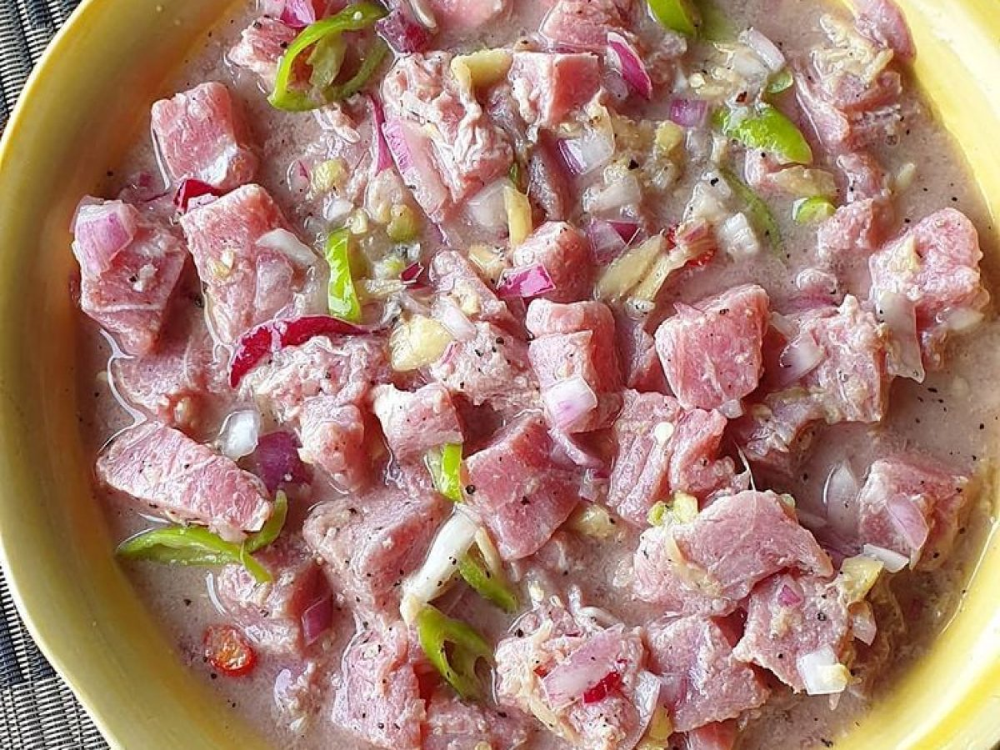

Kinilaw

Kinilaw - a FIlipino dish of raw tuna
One of my favorite food. Never absent in any occasion.
A delicious dish made up of raw tuna. Sometimes used for
inom.
Ingredients
- Raw Tuna
- Chili
- Garlic
- MSG
- Magic Sarap
- Cucumber
- Ginger
- Calamansi
- Vinegar
- Onion
Steps
- Prepare your raw tuna in a bowl. Then put it in the freezer.
- Cut ginger
- prepare cucumber, garlic, onion
- Without the tuna, mix all of the ingredients in a bowl of your choice
- Add the cold raw tuna in the bowl of mixture
- eat